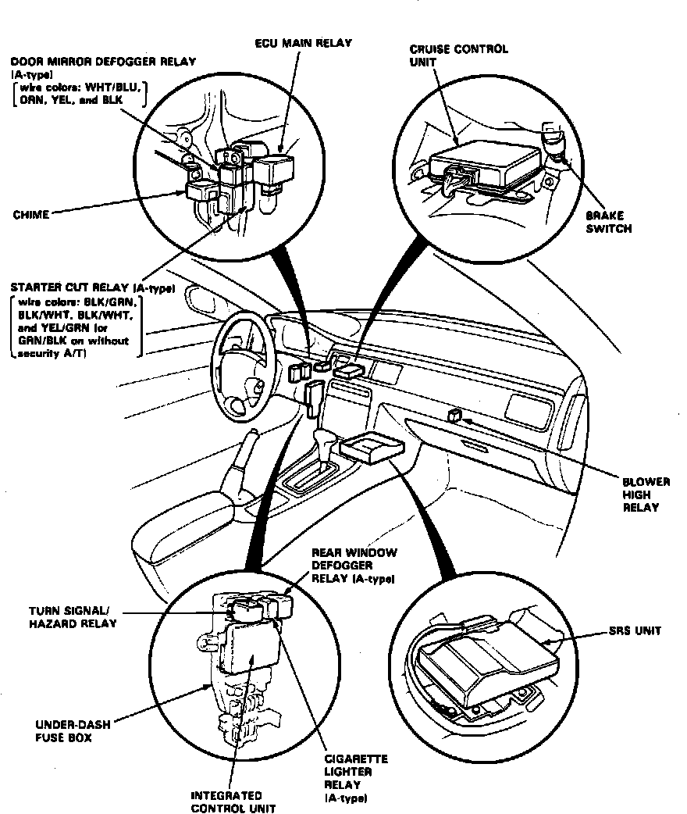

Operation CHARM
: Car repair manuals for everyone.
Home
>>
Acura
>>
1992
>>
Vigor L5-2451cc 2.5L SOHC G25A4 FI
>>
Repair and Diagnosis
>>
Instrument Panel, Gauges and Warning Indicators
>>
Relays and Modules - Instrument Panel
>>
Audible Warning Device Control Module
>>
Locations
Audible Warning Device Control Module: Locations
LH Instrument Panel Relays & Control Units:

Behind LH Side Of I/P